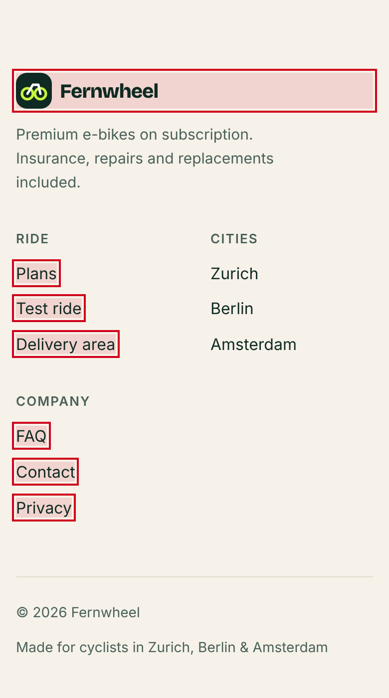
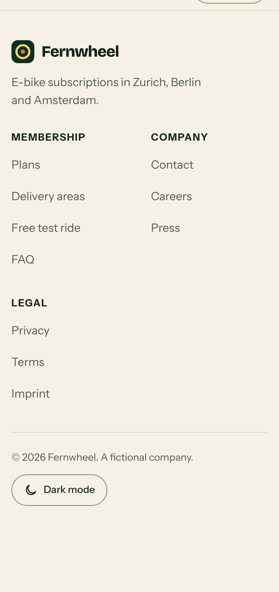
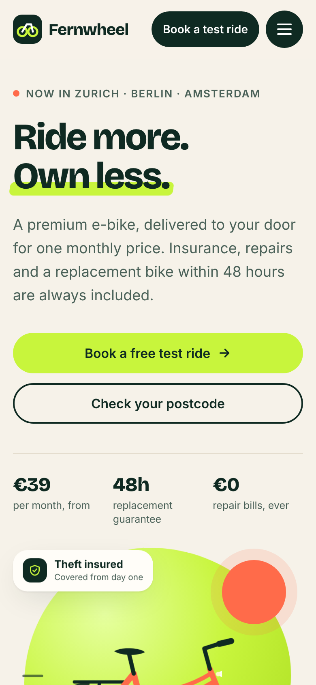
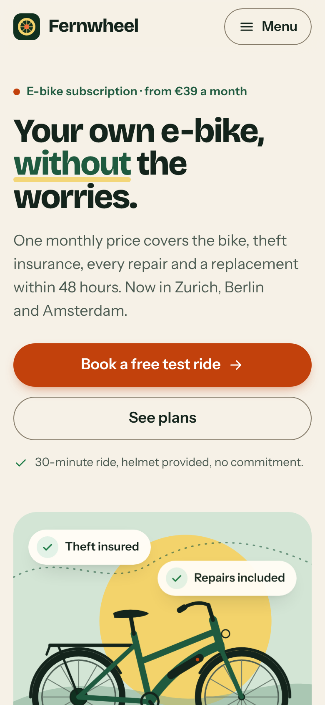
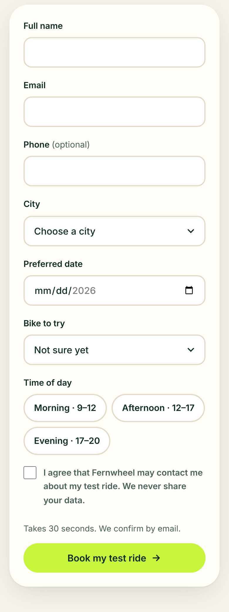
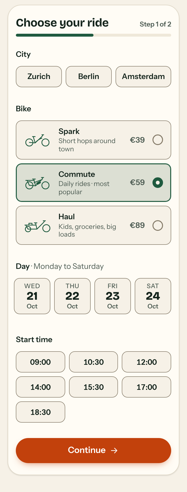

AWithout UXL
58 / 100
Open Exhibit A full size ↗
The Fernwheel case · UXL-DEMO-001 · 20 Oct 2026
We asked Claude Code to build a website for Fernwheel, a fictional e-bike subscription startup. Two fresh, separate sessions got the same prompt, the same model and the same tools. The only difference: Exhibit B had UXL installed as a project skill. The prompt never mentions UX.
We’re Fernwheel, a (fictional) e-bike subscription startup launching in Zurich, Berlin and Amsterdam. Members pay monthly (three plans from €39 to €89), and insurance, repairs and a replacement bike within 48 hours are included. Build our marketing website as a single self-contained index.html (inline CSS and JS, no build step; Google Fonts are fine, but no external images, so use CSS/SVG). It needs a homepage with our plans, a check whether we deliver to your postcode, and a form to book a free test ride. Make it stunning, and it has to work great on phones and desktop.
The exhibits · live
These are the real, unedited files. Scroll inside each frame, try the postcode check (8004, 10437, 1012 AB) and book a ride.
The evidence
Both pages were scanned with UXL’s own tools after the sessions ended: uxl_lint.py on the source and uxl_audit.mjs in Chromium at 360, 390 and 1440 px.
| Measure | Exhibit A · without | Exhibit B · with UXL |
|---|---|---|
| Runtime audit score | 58 / 100 | 96 / 100 |
| Runtime findings (critical · major · minor) | 2 · 2 · 6 | 0 · 0 · 3 |
| Phone tap targets under 44 px | 11 of 35 9 under 24 px | 0 of 31 |
| Distinct font sizes rendered | 19–21 | 11 |
| Filled buttons in the first phone screen | 2, same action in two styles | 1 |
| Booking form | 8 inputs at once | 2 steps, “Step 1 of 2”, tiles |
| Pending state while booking | none, instant success (backend left as a TODO) | “Booking your ride…”, double taps blocked |
| Unfinished booking survives a reload | no | yes |
| Static lint score | 92 | 92 |
| Largest paint (phone) | 0.2 s | 0.2 s |
| Laws cited in the source | 0 | 13 citations across 9 laws |
Scanner scores are heuristics, and this is one run per condition. Raw data: data.json, audit A, audit B.
The counts
At a glance both pages look launch-ready. Each count below names the law, shows the evidence from both exhibits, and states the finding.
On a phone, Exhibit A’s footer links are about 20 px tall and stacked tightly. That’s fine for a mouse and fiddly for a finger. Exhibit B gives every footer link a 44 px row. Exhibit A’s own hand-off promised “large tap targets”; the measurement says otherwise, which is why UXL measures instead of asking.


FindingExhibit A in violation (runtime audit: critical). Exhibit B compliant.
Exhibit A shows the same action, booking a test ride, as a dark header button and a lime hero button. Next to them sits a dark, icon-only menu button: three heavy shapes compete in the first screen. Exhibit B reserves its single orange style for booking, keeps the secondary action outlined, and labels its menu “Menu”.


FindingExhibit A dilutes its call to action. Exhibit B compliant.
Exhibit A asks for name, email, phone, city, date, bike, time and consent in one form. Exhibit B splits booking into “Step 1 of 2” with a progress bar. City, bike and slot are large tiles with prices; contact details come second, next to a summary of the ride.


FindingExhibit A is acceptable but heavy. Exhibit B shows where the user is and what is left.
Exhibit A jumps straight to its success message and leaves the real request as a comment. Once a backend is connected, nothing tells the user that anything is happening. Exhibit B already shows a pending state, blocks double taps, and keeps an unfinished booking so a returning visitor can pick up where they left off.
// TODO: send the booking to your backend, e.g. fetch('/api/test-rides', {method:'POST', body:new FormData(form)})
form.hidden = true;
success.classList.add('show');btn.setAttribute('aria-busy', 'true');
btn.innerHTML = '<span class="spinner" aria-hidden="true"></span><span class="btn-label">Booking your ride…</span>';
.btn[aria-busy="true"] { pointer-events: none; } /* CSS */
store.set('fw-draft', d); // saveDraft()FindingExhibit A has no feedback path. Exhibit B compliant.
Exhibit A renders 19 to 21 different font sizes, including 12.5, 13.5, 14.5 and 15.5 px. Exhibit B uses 11, almost all from one scale. Fewer, deliberate sizes make the hierarchy easier to read.
FindingMinor for both; noticeably tighter in Exhibit B.
For the record
Verdict
Both sessions produced a page that looks launch-ready. Exhibit B is the one that also holds up in a thumb’s reach: every target is tappable, one action leads, booking comes in two short steps, and taps get feedback. It took about twice the time and tokens, spent on checks that caught three real mobile bugs before hand-off.
Reproduce it
Same prompt, two empty folders, one with UXL installed. Then let UXL’s scanners compare the results.
# Exhibit A: no skill
mkdir a && (cd a && claude -p "$(cat PROMPT.txt)")
# Exhibit B: same prompt, UXL installed as a project skill
git clone https://github.com/BurgiSimon/UXL
mkdir b && UXL/install.sh --project b && (cd b && claude -p "$(cat PROMPT.txt)")
# The evidence
python3 UXL/tools/build_demo.py --without a --with b --prompt PROMPT.txt